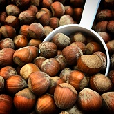
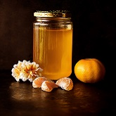
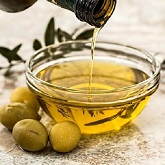

Ürünlerimiz
-

Dut Pekmezi/Tunceli
65 TL(1 Kg)
Tunceli'nin Harçik köyünde, kimyasal ilaç ve gübre kullanılmadan asırlık dut ağaçlarından silkelenerek toplanan dutlar, öncelikle içindeki yapraklardan ayıklanır ve varsa üzerindeki tozun gitmesi için soğuk suda yıkanır. Yıkanan dutlar süzüldükten sonra elle yoğrulur ve kazanlarda kaynatılır, sonra bez torbalara koyulur ve bir askıya asılarak suyu süzülür. Süzüldükten sonra kazanlara konularak kaynatılır. Tepsilerine konularak bir kaç gün güneşte bekletildikten sonra kaplara konulur.
-

Üzüm Pekmezi/Çanakkale
65 TL(1 Kg)
Çanakkale Bayramiç'te kimyasal ilaç ve gübre kullanılmadan yetiştirilen üzümler toplanır. Üzümlerin yıkanmasından sonra havuzlarda suyu çıkartılıp kestirilmeye bırakılır. Bu şekilde bir gün bekletilip sonrasında 7-8 saat kaynatılarak hiçbir koruyucu katkı maddesi kullanılmadan geleneksel yöntemlere göre üretilmiştir.
-

Tahin/Çanakkale
65 TL(1 Kg)
Tahin, Çanakkale Bayramiç'te atalık susam tohumlarından üretilmiş olup çifte kavrulmuştur. Susamı kabuklu çektirilmiştir. Bu şekilde lif oranı daha fazla olmaktadır. Kimyasal ilaç ve gübreye maruz kalmamış topraklarda sadece solucan gübresi ile yetiştirilmiş susamdan üretilmiştir. Üretim süreçlerinde, kadın emeğinin ikincilleştirilmediği, her türlü emek sömürüsünden uzak, doğayı savunan ve koruyan ilkelere önem verilmiştir.
-

Dut Kurusu/Erzincan
60 TL(1 Kg)
Kuru Dut, Erzincan da ilaç ve kimyasal gübre kullanılmamış asırlık ağaçların altına serilen tülllerde toplanması sonrasın güneşte son derece temiz koşullarda kurutulmaya bırakılmıştır. İnsan eli değmeden bidonlarda saklanmaktadır.
-

Domates Salçası/Çanakkale
45 TL(1 Kg)
Domates salçası, Çanakkale Bayramiç'te kimyasal ilaç ve gübre kullanılmadan atalık domates tohumlarından üretilmiş olan domateslerin meşe odunu ateşinde kaynatılarak üretilmiştir.
-

Erişte/Çanakkale
50 TL(1 Kg)
Erişte, Çanakkale Bayramiç'te kimyasal ilaç ve gübre kullanılmadan atalık tohumlarla yetiştirilen buğdaydan üretilmiş un ve yumurta kullanılarak üretilmiştir.
-

Tarhana/Çanakkale
55 TL(1 Kg)
Tarhana, Çanakkale Bayramiç'te kimyasal ilaç ve gübre kullanılmadan atalık tohumlarla yetiştirilmiş domates, soğan, biber bileşenleri ile beraber yoğurt eklenmesiyle üretilmiştir.
-

Vegan Tarhana/Çanakkale
55 TL(1 Kg)
Tarhana, Çanakkale Bayramiç'te kimyasal ilaç ve gübre kullanılmadan atalık tohumlarla yetiştirilmiş domates, soğan, biber bileşenlerinden üretilmiştir.
-

Kahvaltılık Domates/Çanakkale
35 TL(350 Gr)
Kahvaltılık domates, Çanakkale Bayramiç'te geleneksel yöntemlerle üretilmiştir. Bu kahvaltılık domates, kimyasal ilaç ve gübreye maruz kalmamış topraklarda sadece solucan gübresi ile yetiştirilmiş domates, kekik, zeytin yağı, biberiye, sarımsak bileşenlerinden üretilmiştir.
-

Biber Salçası/Gaziantep
42 TL(1 Kg)
Gaziantep'te küçük bir bostanda kimyasal ilaç ve gübre kullanılmadan yetiştirilen biberler, biber çekme makinasında çekilerek tepsilerde güneş ışığında kurumaya bırakılır ve daha sonra kaplara konularak biber salçası kullanıma hazır hale gelir. Üretimin hiçbir aşamasında katkı maddesi bulunmamaktadır.
-

Domates Kurusu/Çanakkale
95 TL(1 Kg)
Domates kurusu Çanakkale Bayramiç'te kimyasal ilaç ve gübre kullanılmadan atalık tohumlarla yetiştirilen domateslerin toplanması ve kesilip tuzlanarak güneş ışığında kurutularak üretilmiştir.
-

Fasulye/Erzincan
35 TL(1 Kg)
Erzincan'da yerli ve atalık tohumlardan yetiştirilmiş olan fasülye, eylül ortası veya sonu gibi toplanarak kurutulup sonrasında patos işlemi yapılarak sapla saman birbirinden ayrılır.
-

Nohut/Çanakkale
35 TL(1 Kg)
Nohut, Çanakkale Bayramiç'te atalık tohumlardan yetiştirilmiştir. Hiçbir sürecinde kimyasal gübre ve ilaç kullanılmadan yetiştirilmiştir.
-

Pul Biber/Gaziantep
10 TL(100 Gr)
Gaziantep'te kimyasal ilaç ve gübre kullanılmadan yetiştirilen kırmızı biberler, içi ayıklanarak tohumlarından arındırılır. Daha sonra yıkanarak temizlenmesi sağlanır. Küf oluşmaması için suyundan süzülür. Daha sonra güneş altında 1 hafta kurumaya bırakılır. Kuruma işlemi bittikten sonra çekim aşamasına geçilerek zeytinyağı ile birlikte, tuzsuz bir şekilde biberlerin pul bibere dönüşümü gerçekleşmiş olur.
-

Fındık/Trabzon
35 TL(1 Kg)
Fındık, Trabzon'da kimyasal ilaç ve gübreye maruz kalmamış topraklarda geleneksel yöntemlerle yetiştirilmiştir.
-

Ceviz/Elazığ
40 TL(1 Kg)
Ceviz, Elazığ'da kimyasal ilaç ve gübre kullanılmadan atalık ceviz ağaçlarından Eylül ayı sonunda silkelenerek toplanır. Cevizin üzerindeki yeşil kabuklar soyulur, varsa çürük olanlar ayıklanır ve daha sonra güneşe serilerek kurutulur.
-

Bal/Tunceli
90 TL(1 Kg)
Bal, Tunceli Nazımiye ilçesinin Ayranlı Köyü'nde 1500 metre ile 2200 metre rakımlı, tarım arazilerinde kimyasal ilaç ve gübrenin kullanılmadığı ve bitki çeşitliliği açısından zengin olduğu bir coğrafyada doğal çiçek balı üretilmektedir. Bal üretim safhasında şeker, şurup veya ilaç bal arılarına verilmemiştir. Arılar, Haziran ayının sonuna doğru peteklere bal doldurmaya başlar ve Ağustos ayının sonuna doğru bal hasadı yapılır.
-

Tulum Peyniri/Erzincan
65 TL(1 Kg)
Ürün hikayesi en yakın zamanda eklenecektir.
-

Zeytinyağı/İzmir
55 TL(1 litre)
Ürün hikayesi en yakın zamanda eklenecektir.
-

Kara Kılçık Buğday Unu/Çanakkale
30 TL(1 Kg)
Ürün hikayesi en yakın zamanda eklenecektir.
-

Kekik/Çanakkale
8 TL(100 gr)
Ürün hikayesi en yakın zamanda eklenecektir.
-

Nane/Çanakkale
10 TL(100 gr)
Ürün hikayesi en yakın zamanda eklenecektir.
-

Ekinezya/Çanakkale
Ürün hikayesi en yakın zamanda eklenecektir.
-

Civanpercemi/Çanakkale
Ürün hikayesi en yakın zamanda eklenecektir.
-

Karabaş Otu/Çanakkale
Ürün hikayesi en yakın zamanda eklenecektir.
-

Hatmi/Çanakkale
Ürün hikayesi en yakın zamanda eklenecektir.